НАБОР ТЕРМИНОВ И ОПРЕДЕЛЕНИЙ, ЧАСТО ВСТРЕЧАЮЩИХСЯ В СФЕРЕ ИНФОРМАЦИОННОЙ БЕЗОПАСНОСТИ
Под информационной безопасностью (ИБ) следует понимать защиту интересов субъектов информационных отношений. Ниже описаны основные ее составляющие – конфиденциальность, целостность, доступность.
-
Конфиденциальность
- состояние информации, при котором ознакомиться с ней могут только уполномоченные лица.
-
Целостность
- состояние информации, при котором изменять её могут только уполномоченные лица.
-
Доступность
- возможность получения авторизованного доступа к информации со стороны уполномоченных лиц.
-
Пароль
- секретный набор символов, позволяющий подтвердить соответствие субъекта предъявленному им идентификатору.
-
Идентификатор
- уникальный набор символов, однозначно соответствующий объекту или субъекту в данной системе.
-
Информация
- данные, представленные в виде, пригодном для хранения, обработки и передачи, и представляющие определенную ценность.
Примеры информационных опасностей и угроз
КАК ЖЕ ЗАЩИТИТЬ СЕБЯ?
Меры по обеспечению информационной безопасности
- Используйте лицензионное программное обеспечение
- Не передавайте конфиденциальную информацию 3-м лицам
- Используйте двухфакторную аутентификацию
- Используйте антивирусные программы
- 
- Используйте браузер с самыми последними обновлениями
- Пользуйтесь современной операционной системой
Кто обеспечивает информационную безопасность в России?
Государственные органы РФ, контролирующие деятельность в области защиты информации:
- Комитет Государственной думы по безопасности
- Совет безопасности России
- Федеральная служба по техническому и экспортному контролю (ФСТЭК России)
- Федеральная служба безопасности Российской Федерации (ФСБ России)
- Федеральная служба охраны Российской Федерации (ФСО России)
- Служба внешней разведки Российской Федерации (СВР России)
- Министерство обороны Российской Федерации (Минобороны России)
Видеоролики
Небольшие видеоролики объясняющие правила поведения в сети для всех возрастов
Безопасность детей в интернете
Видеоролик о том как защитить своих детей от влияния интернета
СмотретьКак защитить смартфон от взлома
Видеоролик о защите смартфона от взлома и о том, как узнать, был ли он взломан
СмотретьИнформация носит исключительно информационный характер и ни при каких условиях не является публичной офертой.
Почему следует соблюдать информационную безопасность
«Терра Тех» обладает внушительным опытом поиска и анализа любой доступной пространственной информации на территории земного шара за любой период времени
Это довольно легко
Вам не нужно быть программистом или инженером, достаточно следовать уже выработанным рекомендациям от более опытных людей по итогам которых с Вашими личными данными всё будет в порядке.
Устройство будет работать быстрее
Не секрет, что если на устройстве будет много вирусов - оно начнёт сильно тормозить. Следует не допускать их появления на вашей технике и они не потеряют в производительности
Большой выбор инструментов
За последние года было создано множество вирусов, но и столько же антивирусных программ, каждый найдёт нужный ему инструмент и сможет минимизировать количество вирусов на компьютере.
Конфиденциальность
Абсолютная конфиденциальность является одним из главных принципов личной жизни человека. Если на вашем компьютере будут вирусы - хакеры смогут следить за вашими действиями в социальных сетях и иных сервисах
Поведение при нарушении информационной безопасности
Мой компьютер взломали. Что делать?
Необходимо сначала принять меры безопасности исключающие несанкционированный доступ к Вашему ПК (персональному компютеру). Необходимо проверить антивирусной программой и утилитами для нахождения и удаления вирусов, троянов (других шпионских и вредоносных программ) Ваш ПК.
После проверки, если найдены и уничтожены вирусы (трояны и др.) , перегрузите Ваш компьютер, нажимая (кликая мышкой) последовательно ссылки, кнопку "Пуск"> "Завершение работы"> "Перегрузить компьютер" и снова просканируйте антивирусом свой компьютер.
Ни в каких программах, на жестких дисках ПК, не сохраняйте свои пароли, иначе они могут быть похищены. Можно сохранять пароли на сменных носителях (дискетах, flash картах, CD-DVD) или на бумаге, только нужно исключить к ним доступ посторонних.
Мою банковскую карту взломали. Что мне делать?
Самое первое, что должно делать в такой ситуации – это звонок в банк или онлайн-консультация со специалистом. Сейчас даже получить займ онлайн не проблема, а написать в чат дежурному менеджеру, тем более. Поэтому, звоните, пишите или идите в ближайший офис банка, если с гаджетами на «ВЫ». Так же, очень важно знать причину, почему это произошло. Конечно, как правило, взлом карты происходит мошенниками из-за несовершенной системы безопасности.
В этому случае необходимо заблокировать дебетовую карту. По банковскому закону, даже съёмные деньги находятся на транзакционном счёте в течение трёх суток. Поэтому, в этот временной промежуток необходимо сообщить банку об отмене операции. В этом случае деньги, в течении ближайшего времени поступят на карту, либо останутся на транзакционном счёте до выяснения обстоятельств.
Мой аккаунт в социальной сети взломали. Что делать?
-
Выполните полную проверку антивирусом, желательно при этом физически отключить компьютер от Интернета и локальной сети (выдернув кабель). Начинать следует именно с этого: если пароль был украден вирусом, то после установки нового пароля его мгновенно украдут повторно.
-
Смените пароль на новый на странице в своей социальной сети (нужный пункт следует искать в настройках), на привязанном к ней ящике электронной почты и других важных сайтах.
-
Если доступ к странице не удаётся восстановить с помощью восстановления пароля, срочно обратитесь в службу поддержки со страницы друга за помощью.
Мои персональные данные украли. Что делать?
Обратитесь в полицию
Вы также можете сообщить о краже личных данных в местное отделение полиции. Если вы решили обратиться в полицию, возьмите копию отчета о краже личных данных, удостоверение личности государственного образца с фотографией, подтверждение текущего адреса и любое доказательство того, что вы стали жертвой кражи личных данных, например требование о погашении задолженности. Не забудьте попросить копию полицейского отчета на случай, если он вам понадобится. Запишите номер телефона следователя для последующих обращений.